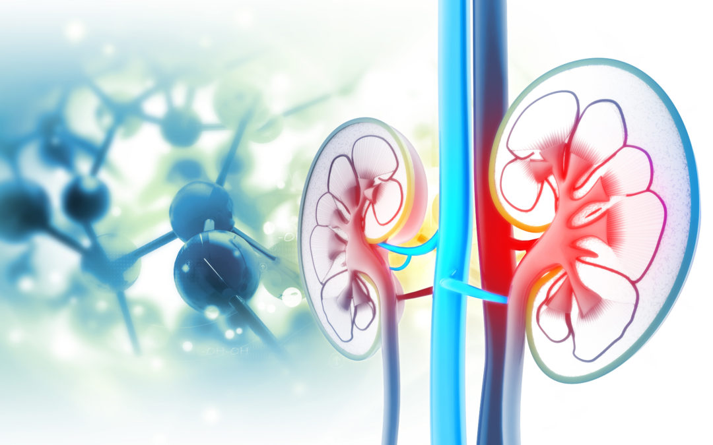
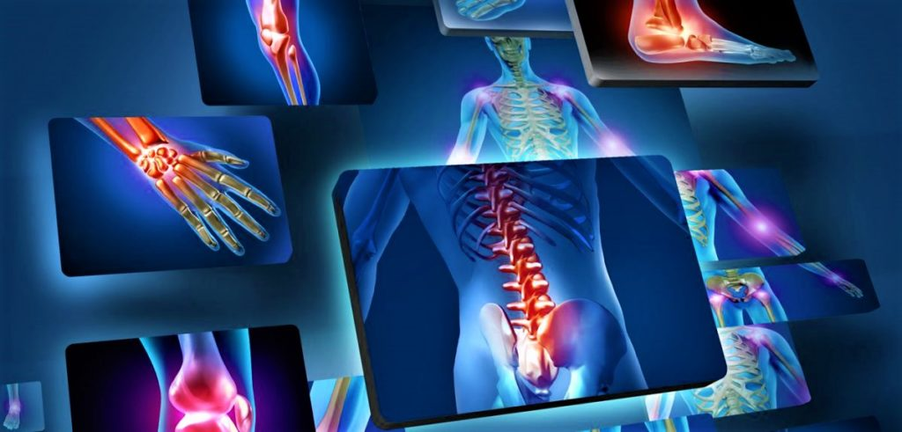
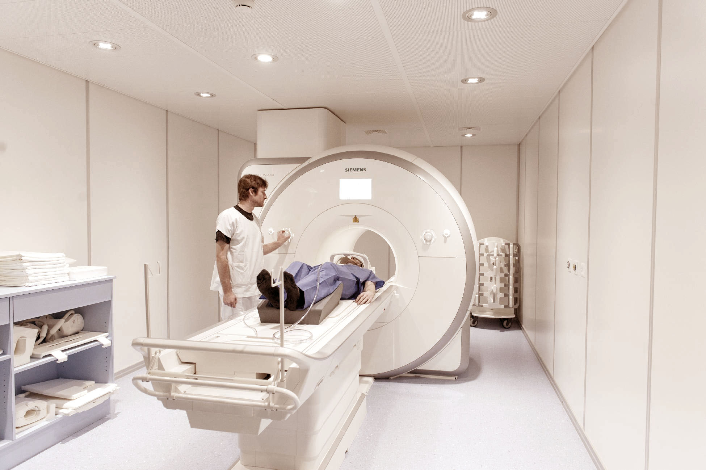
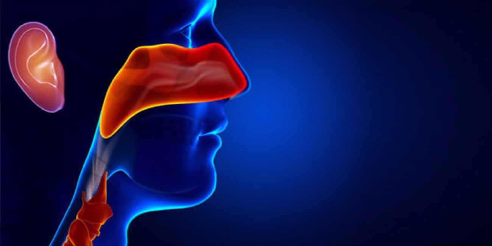
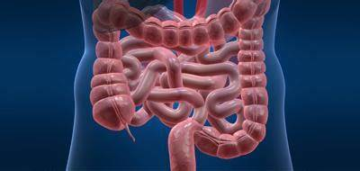
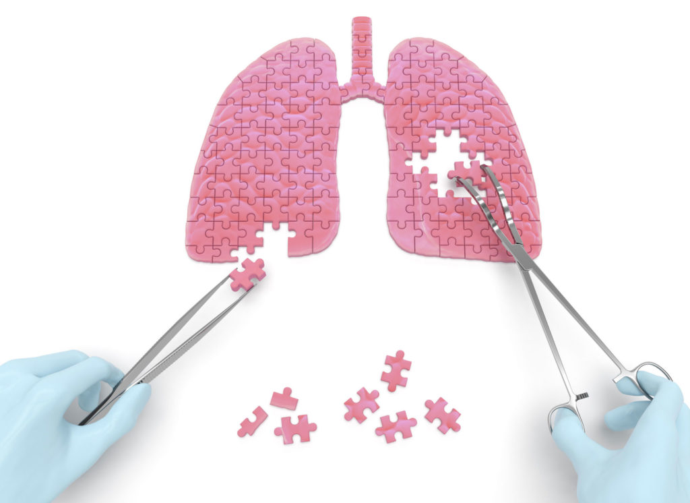
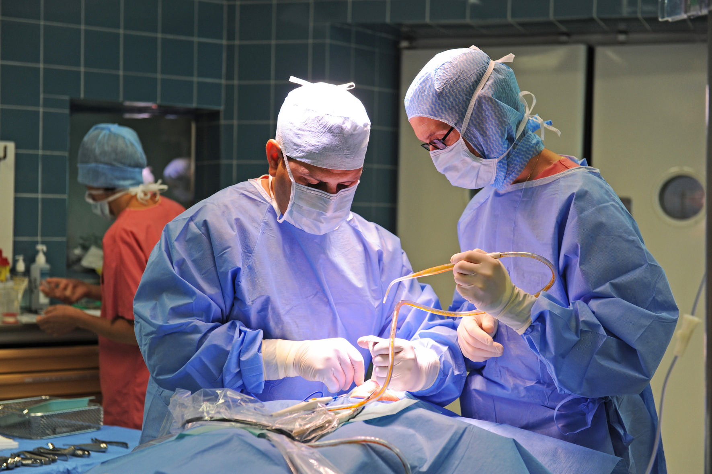

urgences,réanimation
Ces deux services sont essentiels pour assurer
une réponse rapide et efficace aux situations
médicales d'urgence
OPHTALMOLOGIE
L'ophtalmologie est la spécialité qui
se consacre à l'étude de la structure
et du fonctionnement des yeux...
GYNECOLOGIE,Pédiatre
La gynécologie traite de la physiologie
du système génital féminin. Toutes les
maladies gynécologiques des MST aux...
NEUROLOGIE
La neurologie est une discipline médicale
qui étudie la physiologie, l'anatomie et
la pathologie du système nerveux...
ESTHETIQUE
En plus de la chirurgie esthétique,
International Clinic réunit sous
un même toit un département de
médecine esthé...
CARDIOLOGIE
Le cardiologue est le médecin
spécialisé dans l'étude du cœur
et des vaisseaux.Il suit certains
patients...
ENDOCRINOLOGIE
L'endocrinologue est le spécialiste des problèmes hormonaux.
Il prend en charge les pathologies liées à un dérèglement...

service d'urologie
L'urologie est la spécialité médicale
dédiée aux troubles du système urinaire
et génital masculin et féminin,

Traumatologie, orthopédie
des spécialités médicales axées sur
la prise en charge des blessures traumatiques
et des troubles musculo-squelettiques.

Radiologie
la spécialité qui utilise l'imagerie médicale,
telle que les radiographies et les scanners,
pour diagnostiquer
et évaluer les conditions médicales.
Oncologie
L'oncologie est la spécialité médicale axée
sur le diagnostic,
le traitement et la prévention des cancers

Oto-rhino-laryngologie
c'est la spécialité traitant des troubles
de l'oreille,
du nez, de la gorge, de la tête et du cou
Médecine interne
La médecine interne traite les patients souffrant de maladies
gastroentérologiques, hépatologiques, endocrinologiques
et métaboliques.

Gastro-Entérologie
cette spécialité se concentrant
sur le traitement des maladies
liées au système digestif, comprenant l'estomac,
les intestins, le foie,
la vésicule biliaire et le pancréas

Pneumologie, chirurgie thoracique
Le service de pneumologie prend en charge
toutes les maladies respiratoires aiguës
et chroniques

chirurgie vasculaire et endovasculaire
la spécialité axée sur le traitement
chirurgical des maladies des vaisseaux sanguins,
pour traiter les affections vasculaires.